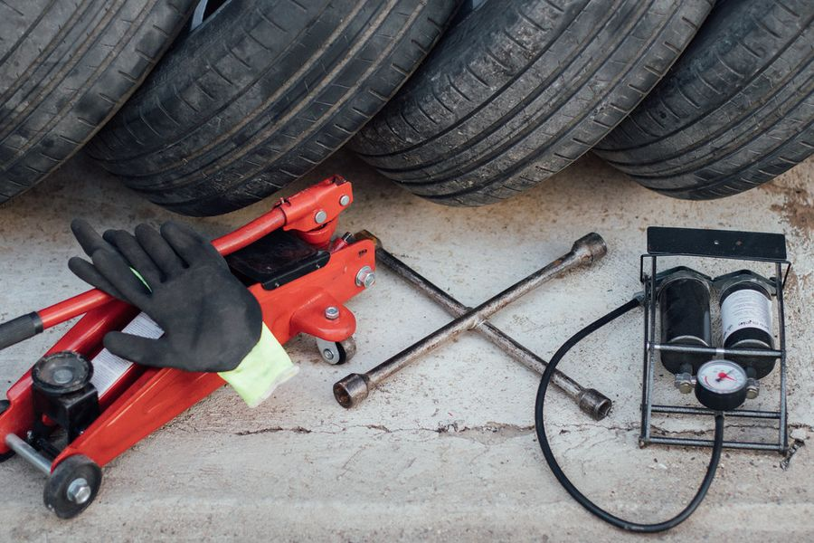

İletişim
Pite giriş: adres, saat, yol tarifi
İstasyon Mahallesi, Gençosman Sokak No:39A. Haftanın her günü 08:30–22:30.
Her gün 08:30–22:30
Saatler
Her gün 08:30–22:30
| Gün | Açık |
|---|---|
| Pazartesi | 08:30–22:30 |
| Salı | 08:30–22:30 |
| Çarşamba | 08:30–22:30 |
| Perşembe | 08:30–22:30 |
| Cuma | 08:30–22:30 |
| Cumartesi | 08:30–22:30 |
| Pazar | 08:30–22:30 |
Bayram ve resmî tatillerde saatler değişebilir; gelmeden önce arayın.
Hazır mesaj
Konuyu seçin, birkaç bilgi ekleyin; mesajınız yazılmış olarak WhatsApp'ta açılsın.
Gidecek mesaj
Mesaj siz göndermeden gitmez: WhatsApp'ta açılır, isterseniz düzeltip yollarsınız. WhatsApp kullanmıyorsanız mesajı kopyalayın ya da arayın.
Gelmeden önce
Altı küçük hazırlık, pitte geçen zamanı kısaltır.
- Ebatınızı not edinYanaktaki yazıyı okuyun ya da fotoğrafını çekin. Nerede yazıyor?
- Kilitli bijon anahtarını alınJantlarınızda kilitli bijon varsa anahtarı genellikle bagajda, stepnenin yanında ya da torpidoda durur.
- Takılacak lastikleri getirinMevsimlik takımınız sizdeyse dördünü de getirin; hangisinin nereden çıktığı üzerinde yazıyorsa işimiz kolaylaşır.
- Şikâyeti tarif edinTitreşim hangi hızda başlıyor, hava kaç günde iniyor, ses ne zaman geliyor?
- Bagajı boşaltınStepneye ve krikoya ulaşmak gerekebilir.
- Yola çıkmadan haber verinBeklememeniz için arayın ya da hazır mesajı gönderin.

Lastik yolda patlarsa
Sırası önemli olan altı adım. Önce güvenlik, sonra lastik.
Direksiyonu iki elle tutun
Ani fren yapmayın. Ayağınızı gazdan çekin, aracın kendiliğinden yavaşlamasını bekleyin.
Güvenli bir yere çekin
Trafik akışından uzak, düz ve sert bir zemin seçin. Dörtlüleri yakın, el frenini çekin.
Görünür olun
Reflektörü aracın arkasına, gelen sürücülerin uzaktan fark edeceği bir mesafeye koyun. Araçtan trafiğe bakmayan taraftan inin.
Stepne ya da tamir kiti
Bijonları teker yerdeyken gevşetin, sonra krikoyu aracın kaldırma noktasına yerleştirin. Araç krikodayken altına girmeyin.
Geçici stepneyle yavaş gidin
İnce stepnelerin üzerinde izin verilen en yüksek hız yazar; ona uyun ve asıl lastiği en kısa zamanda baktırın.
Lastiği gösterin
İnik lastikle yola devam etmediyseniz tamir şansı yüksektir. Çalışma saatlerimizdeyse arayın, durumu anlatın.